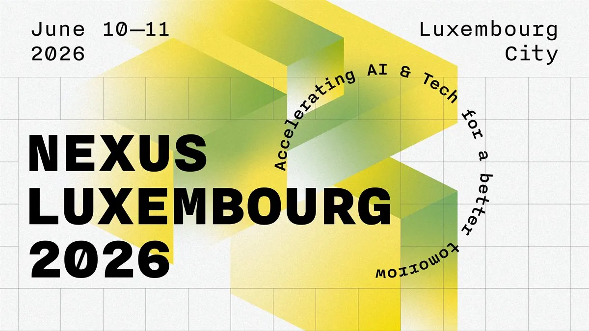
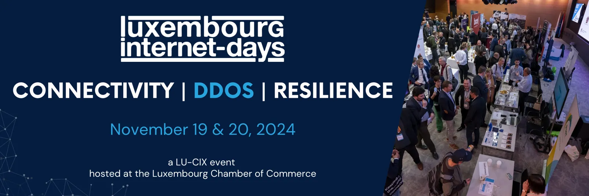

<style>
  :root {
    --paper: #f4ebd8;
    --paper-2: #ede2c7;
    --ink: #1d1816;
    --ink-soft: #5a4f44;
    --rule: #c9b88c;
    --rule-faint: #e1d4ad;
    --belval: #b15c2e;
    --kirchberg: #2b5b8e;
    --dommeldange: #3a6b3a;
    --linster: #8b2c2c;
    --past: #a39a85;
  }

  .chrono-wrap {
    background: var(--paper);
    color: var(--ink);
    font-family: 'Inter', -apple-system, BlinkMacSystemFont, sans-serif;
    line-height: 1.5;
    margin: 0;
    padding: 0;
  }

  .chrono-wrap a { color: inherit; text-decoration: underline; text-decoration-color: var(--rule); text-underline-offset: 2px; }
  .chrono-wrap a:hover { text-decoration-color: var(--ink); }

  /* graph-paper background lines */
  .chrono-wrap::before {
    content: "";
    position: fixed;
    inset: 0;
    background-image:
      linear-gradient(var(--rule-faint) 1px, transparent 1px),
      linear-gradient(90deg, var(--rule-faint) 1px, transparent 1px);
    background-size: 32px 32px;
    opacity: 0.4;
    pointer-events: none;
    z-index: 0;
  }

  .chrono-wrap > * { position: relative; z-index: 1; }

  /* MASTHEAD */
  .masthead {
    padding: 56px 48px 36px;
    border-bottom: 3px double var(--rule);
  }
  .masthead-row {
    display: flex;
    justify-content: space-between;
    align-items: baseline;
    font-family: 'IBM Plex Mono', 'Courier New', monospace;
    font-size: 12px;
    letter-spacing: 0.08em;
    text-transform: uppercase;
    color: var(--ink-soft);
    margin-bottom: 28px;
  }
  .masthead h1 {
    font-family: 'Fraunces', 'Playfair Display', Georgia, serif;
    font-weight: 400;
    font-size: clamp(48px, 8vw, 96px);
    line-height: 0.92;
    letter-spacing: -0.02em;
    margin: 0 0 28px;
  }
  .masthead h1 em {
    font-style: italic;
    color: var(--linster);
  }
  .stat-pills {
    display: flex;
    gap: 12px;
    flex-wrap: wrap;
    font-family: 'IBM Plex Mono', monospace;
    font-size: 12px;
  }
  .pill {
    border: 1px solid var(--ink);
    padding: 6px 12px;
    border-radius: 999px;
    letter-spacing: 0.04em;
  }
  .pill.dot::before {
    content: "";
    display: inline-block;
    width: 8px;
    height: 8px;
    border-radius: 50%;
    background: var(--linster);
    margin-right: 8px;
    vertical-align: 1px;
  }

  /* VERDICT */
  .verdict {
    padding: 40px 48px;
    border-bottom: 1px solid var(--rule);
    background: var(--paper-2);
  }
  .verdict-line {
    font-family: 'Fraunces', Georgia, serif;
    font-size: clamp(22px, 2.6vw, 32px);
    line-height: 1.35;
    margin: 0;
    max-width: 56ch;
  }
  .verdict-line strong { font-weight: 600; }
  .verdict-line em { font-style: italic; color: var(--linster); }

  /* CHRONOGRAM */
  .chrono-section {
    padding: 56px 48px 48px;
    border-bottom: 1px solid var(--rule);
  }
  .section-head {
    display: flex;
    justify-content: space-between;
    align-items: baseline;
    margin-bottom: 28px;
  }
  .section-head h2 {
    font-family: 'Fraunces', Georgia, serif;
    font-weight: 400;
    font-size: 32px;
    letter-spacing: -0.01em;
    margin: 0;
  }
  .section-head .legend {
    font-family: 'IBM Plex Mono', monospace;
    font-size: 11px;
    letter-spacing: 0.08em;
    text-transform: uppercase;
    color: var(--ink-soft);
  }

  .chrono-frame {
    position: relative;
    border: 1px solid var(--ink);
    background: var(--paper);
    padding: 0;
    overflow-x: auto;
  }
  .chrono-grid {
    display: grid;
    grid-template-columns: 184px repeat(8, minmax(80px, 1fr));
    min-width: 900px;
  }

  /* corner cell */
  .grid-corner {
    background: var(--ink);
    color: var(--paper);
    font-family: 'IBM Plex Mono', monospace;
    font-size: 10px;
    letter-spacing: 0.1em;
    padding: 14px 12px;
    border-right: 1px solid var(--ink);
    border-bottom: 1px solid var(--ink);
    display: flex;
    flex-direction: column;
    justify-content: space-between;
    gap: 6px;
  }
  .grid-corner .ax-y { text-align: left; }
  .grid-corner .ax-x { text-align: right; opacity: 0.8; }

  .month-cell {
    border-bottom: 1px solid var(--ink);
    border-right: 1px dashed var(--rule);
    padding: 14px 10px 10px;
    background: var(--paper-2);
    font-family: 'IBM Plex Mono', monospace;
    font-size: 11px;
    letter-spacing: 0.1em;
    text-transform: uppercase;
    text-align: center;
    color: var(--ink-soft);
  }
  .month-cell.is-current {
    color: var(--ink);
    background: var(--paper);
    box-shadow: inset 0 -3px 0 var(--linster);
  }
  .month-cell .m-name { font-weight: 600; color: var(--ink); display: block; }
  .month-cell .m-meta { font-size: 9px; opacity: 0.7; }

  /* lanes */
  .lane-label {
    border-right: 1px solid var(--ink);
    border-bottom: 1px solid var(--rule);
    padding: 18px 14px;
    background: var(--paper-2);
    display: flex;
    flex-direction: column;
    justify-content: center;
    min-height: 132px;
  }
  .lane-label .lane-venue {
    font-family: 'Fraunces', Georgia, serif;
    font-size: 17px;
    font-weight: 500;
    line-height: 1.15;
    margin-bottom: 4px;
  }
  .lane-label .lane-meta {
    font-family: 'IBM Plex Mono', monospace;
    font-size: 10px;
    letter-spacing: 0.06em;
    color: var(--ink-soft);
    text-transform: uppercase;
  }
  .lane-label .lane-tag {
    display: inline-block;
    width: 28px;
    height: 4px;
    margin-top: 8px;
  }
  .lane-belval .lane-tag { background: var(--belval); }
  .lane-kirchberg .lane-tag { background: var(--kirchberg); }
  .lane-dommeldange .lane-tag { background: var(--dommeldange); }

  .lane-cell {
    border-right: 1px dashed var(--rule);
    border-bottom: 1px solid var(--rule);
    min-height: 132px;
    position: relative;
    padding: 8px 6px;
  }
  .lane-cell:last-child { border-right: 1px solid var(--ink); }

  .event-tile {
    position: absolute;
    inset: 8px 6px;
    border: 1.5px solid var(--ink);
    background: var(--paper);
    padding: 8px 9px 9px;
    display: flex;
    flex-direction: column;
    justify-content: space-between;
    text-decoration: none;
    color: var(--ink);
    transition: transform 0.15s, box-shadow 0.15s;
  }
  .event-tile:hover {
    transform: translateY(-2px);
    box-shadow: 3px 5px 0 var(--ink);
  }
  .event-tile .ev-band {
    height: 6px;
    margin: -8px -9px 6px;
  }
  .event-tile.t-belval .ev-band { background: var(--belval); }
  .event-tile.t-kirchberg .ev-band { background: var(--kirchberg); }
  .event-tile.t-dommeldange .ev-band { background: var(--dommeldange); }

  .event-tile .ev-day {
    font-family: 'Fraunces', Georgia, serif;
    font-weight: 500;
    font-size: 18px;
    line-height: 1;
    letter-spacing: -0.01em;
  }
  .event-tile .ev-day .ev-day-2 {
    color: var(--ink-soft);
    font-size: 14px;
  }
  .event-tile .ev-name {
    font-family: 'IBM Plex Mono', monospace;
    font-size: 11px;
    font-weight: 600;
    letter-spacing: 0.04em;
    text-transform: uppercase;
    line-height: 1.2;
    margin-top: 4px;
  }
  .event-tile .ev-foot {
    font-family: 'IBM Plex Mono', monospace;
    font-size: 9px;
    letter-spacing: 0.06em;
    color: var(--ink-soft);
    text-transform: uppercase;
    margin-top: 4px;
  }
  .event-tile .ev-pin {
    position: absolute;
    bottom: -8px;
    right: 8px;
    background: var(--linster);
    color: var(--paper);
    font-family: 'IBM Plex Mono', monospace;
    font-size: 9px;
    letter-spacing: 0.06em;
    padding: 3px 8px;
    border-radius: 2px;
    text-transform: uppercase;
    white-space: nowrap;
  }

  /* today vertical line */
  .today-line {
    position: absolute;
    top: 38px;
    bottom: 0;
    width: 2px;
    background: var(--linster);
    z-index: 5;
    pointer-events: none;
  }
  .today-line::before {
    content: "TODAY · MAY 29";
    position: absolute;
    top: -22px;
    left: -38px;
    background: var(--linster);
    color: var(--paper);
    font-family: 'IBM Plex Mono', monospace;
    font-size: 9px;
    padding: 3px 7px;
    letter-spacing: 0.08em;
    white-space: nowrap;
  }

  /* PAIRINGS */
  .pairings-section { padding: 56px 48px 48px; border-bottom: 1px solid var(--rule); }
  .pairings-intro {
    font-family: 'Fraunces', Georgia, serif;
    font-size: 18px;
    color: var(--ink-soft);
    max-width: 60ch;
    margin: -16px 0 32px;
    line-height: 1.5;
  }
  .pairings-grid {
    display: grid;
    grid-template-columns: repeat(auto-fill, minmax(280px, 1fr));
    gap: 24px;
  }
  .pairing {
    background: var(--paper);
    border: 1.5px solid var(--ink);
    display: flex;
    flex-direction: column;
    overflow: hidden;
    position: relative;
  }
  .pairing-photo {
    aspect-ratio: 16/9;
    background: var(--paper-2);
    overflow: hidden;
    border-bottom: 1.5px solid var(--ink);
    display: flex;
    align-items: center;
    justify-content: center;
  }
  .pairing-photo img {
    width: 100%;
    height: 100%;
    object-fit: cover;
    display: block;
  }
  .pairing-photo.is-placeholder {
    background: linear-gradient(135deg, #f4ebd8 0%, #b15c2e 100%);
    color: var(--paper);
    font-family: 'Fraunces', Georgia, serif;
    font-size: 42px;
    letter-spacing: -0.02em;
    font-weight: 500;
  }
  .pairing-body {
    padding: 18px 20px 16px;
    flex-grow: 1;
    display: flex;
    flex-direction: column;
  }
  .pairing-date {
    font-family: 'IBM Plex Mono', monospace;
    font-size: 11px;
    letter-spacing: 0.1em;
    text-transform: uppercase;
    color: var(--ink-soft);
    margin-bottom: 6px;
  }
  .pairing-date .day-strong { color: var(--ink); font-weight: 700; }
  .pairing-body h3 {
    font-family: 'Fraunces', Georgia, serif;
    font-weight: 500;
    font-size: 22px;
    letter-spacing: -0.01em;
    margin: 0 0 8px;
    line-height: 1.15;
  }
  .pairing-body h3 a { text-decoration: none; }
  .pairing-body h3 a:hover { text-decoration: underline; text-decoration-color: var(--linster); }
  .pairing-venue {
    font-size: 13px;
    color: var(--ink-soft);
    margin: 0 0 10px;
  }
  .pairing-summary {
    font-size: 13px;
    line-height: 1.5;
    margin: 0 0 14px;
    flex-grow: 1;
  }
  .pairing-pin {
    background: var(--linster);
    color: var(--paper);
    font-family: 'IBM Plex Mono', monospace;
    font-size: 11px;
    letter-spacing: 0.06em;
    text-transform: uppercase;
    padding: 12px 20px;
    text-align: center;
  }
  .pairing-pin .pin-glyph { margin-right: 6px; }
  .pairing-pin .pin-strong { font-weight: 700; }

  /* PAST STRIP */
  .past-section { padding: 48px 48px; border-bottom: 1px solid var(--rule); background: var(--paper-2); }
  .past-section h2 {
    font-family: 'Fraunces', Georgia, serif;
    font-weight: 400;
    font-size: 24px;
    margin: 0 0 6px;
    color: var(--past);
  }
  .past-intro {
    font-family: 'IBM Plex Mono', monospace;
    font-size: 11px;
    letter-spacing: 0.08em;
    text-transform: uppercase;
    color: var(--past);
    margin: 0 0 24px;
  }
  .past-strip {
    display: grid;
    grid-template-columns: repeat(5, 1fr);
    gap: 12px;
  }
  .past-card {
    background: var(--paper);
    border: 1px dashed var(--past);
    padding: 14px 14px 14px;
    text-decoration: none;
    color: var(--past);
    transition: color 0.15s, border-color 0.15s;
  }
  .past-card:hover { color: var(--ink); border-color: var(--ink); }
  .past-card .past-month {
    font-family: 'IBM Plex Mono', monospace;
    font-size: 10px;
    letter-spacing: 0.1em;
    text-transform: uppercase;
    margin-bottom: 6px;
    display: block;
  }
  .past-card .past-name {
    font-family: 'Fraunces', Georgia, serif;
    font-size: 16px;
    font-weight: 500;
    line-height: 1.2;
    margin-bottom: 4px;
    display: block;
  }
  .past-card .past-venue {
    font-size: 11px;
    line-height: 1.3;
    opacity: 0.85;
  }

  /* HORIZON */
  .horizon-section { padding: 48px 48px; border-bottom: 1px solid var(--rule); }
  .horizon-section h2 {
    font-family: 'Fraunces', Georgia, serif;
    font-weight: 400;
    font-size: 24px;
    margin: 0 0 6px;
  }
  .horizon-intro {
    font-family: 'IBM Plex Mono', monospace;
    font-size: 11px;
    letter-spacing: 0.08em;
    text-transform: uppercase;
    color: var(--ink-soft);
    margin: 0 0 24px;
  }
  .horizon-grid {
    display: grid;
    grid-template-columns: repeat(auto-fill, minmax(220px, 1fr));
    gap: 16px;
  }
  .horizon-card {
    padding: 18px 18px;
    border: 1px solid var(--rule);
    background: var(--paper);
    position: relative;
  }
  .horizon-card .h-km {
    font-family: 'IBM Plex Mono', monospace;
    font-size: 11px;
    letter-spacing: 0.08em;
    color: var(--linster);
    text-transform: uppercase;
    margin-bottom: 6px;
    display: block;
  }
  .horizon-card .h-place {
    font-family: 'Fraunces', Georgia, serif;
    font-size: 22px;
    margin-bottom: 8px;
    display: block;
  }
  .horizon-card .h-note { font-size: 13px; color: var(--ink-soft); line-height: 1.5; }

  /* RECURRING */
  .recurring-section { padding: 36px 48px; border-bottom: 1px solid var(--rule); background: var(--paper-2); }
  .recurring-section h2 {
    font-family: 'Fraunces', Georgia, serif;
    font-weight: 400;
    font-size: 20px;
    margin: 0 0 14px;
  }
  .recurring-row {
    display: flex;
    gap: 24px;
    flex-wrap: wrap;
    font-size: 13px;
  }
  .recurring-item {
    flex: 1 1 320px;
  }
  .recurring-item strong { font-family: 'IBM Plex Mono', monospace; font-size: 11px; letter-spacing: 0.06em; text-transform: uppercase; }

  /* SIBLINGS */
  .sibling-section { padding: 56px 48px 48px; border-bottom: 1px solid var(--rule); }
  .sibling-section h2 {
    font-family: 'Fraunces', Georgia, serif;
    font-weight: 400;
    font-size: 28px;
    margin: 0 0 24px;
  }
  .sibling-grid {
    display: grid;
    grid-template-columns: repeat(auto-fill, minmax(260px, 1fr));
    gap: 16px;
  }
  .sibling-card {
    border: 1px solid var(--rule);
    padding: 20px;
    background: var(--paper);
    text-decoration: none;
    color: var(--ink);
    display: block;
    transition: border-color 0.15s, transform 0.15s;
  }
  .sibling-card:hover { border-color: var(--ink); transform: translateY(-2px); }
  .sibling-card .s-depth {
    font-family: 'IBM Plex Mono', monospace;
    font-size: 10px;
    letter-spacing: 0.1em;
    text-transform: uppercase;
    color: var(--ink-soft);
    margin-bottom: 8px;
    display: block;
  }
  .sibling-card .s-title {
    font-family: 'Fraunces', Georgia, serif;
    font-size: 18px;
    line-height: 1.25;
    margin: 0 0 8px;
    display: block;
  }
  .sibling-card .s-summary { font-size: 13px; color: var(--ink-soft); line-height: 1.5; }

  /* COLOPHON */
  .colophon {
    padding: 32px 48px 56px;
    font-family: 'IBM Plex Mono', monospace;
    font-size: 11px;
    letter-spacing: 0.06em;
    color: var(--ink-soft);
    text-transform: uppercase;
    text-align: center;
  }

  @media (max-width: 720px) {
    .masthead, .verdict, .chrono-section, .pairings-section, .past-section, .horizon-section, .sibling-section, .recurring-section, .colophon { padding-left: 24px; padding-right: 24px; }
    .past-strip { grid-template-columns: 1fr 1fr; }
  }
</style>

<link rel="preconnect" href="https://fonts.googleapis.com">
<link rel="preconnect" href="https://fonts.gstatic.com" crossorigin>
<link href="https://fonts.googleapis.com/css2?family=Fraunces:ital,opsz,wght@0,9..144,400..600;1,9..144,400..600&family=IBM+Plex+Mono:wght@400;600&family=Inter:wght@400;500;600&display=swap" rel="stylesheet">

<article class="chrono-wrap">

  <header class="masthead">
    <div class="masthead-row">
      <span>Chronogram · 2026 · &lt;30 km of Frisange</span>
      <span>↳ <a href="https://lealinster.com/">17 route de Luxembourg</a></span>
    </div>
    <h1>Five tech weekends.<br>One <em>Michelin</em> star.</h1>
    <div class="stat-pills">
      <span class="pill dot">5 events upcoming</span>
      <span class="pill">3 venue clusters</span>
      <span class="pill">16–18 km from Linster</span>
      <span class="pill">survey · 24 citations</span>
    </div>
  </header>

  <section class="verdict">
    <p class="verdict-line">The <strong>Jun 10–11 <a href="https://nexusluxembourg.com/">Nexus</a></strong> week pairs cleanest — finishes Thursday, Saturday <em>Jun 13</em> is the natural Linster slot. <a href="https://www.ictspring.com/">ICT Spring</a>'s Mon/Tue compresses the dinner to the <em>prior</em> Saturday.</p>
  </section>

  <!-- THE CHRONOGRAM -->
  <section class="chrono-section">
    <div class="section-head">
      <h2>The chronogram</h2>
      <span class="legend">↘ X · MONTH &nbsp; ↓ Y · VENUE CLUSTER &nbsp; ◼ MAROON · LINSTER PIN</span>
    </div>

    <div class="chrono-frame">
      <div class="chrono-grid">
        <!-- Header row -->
        <div class="grid-corner">
          <span class="ax-y">↓ VENUE</span>
          <span class="ax-x">MONTH →</span>
        </div>
        <div class="month-cell is-current"><span class="m-name">May</span><span class="m-meta">31 days · now</span></div>
        <div class="month-cell"><span class="m-name">Jun</span><span class="m-meta">30 days</span></div>
        <div class="month-cell"><span class="m-name">Jul</span><span class="m-meta">31 days</span></div>
        <div class="month-cell"><span class="m-name">Aug</span><span class="m-meta">31 days</span></div>
        <div class="month-cell"><span class="m-name">Sep</span><span class="m-meta">30 days</span></div>
        <div class="month-cell"><span class="m-name">Oct</span><span class="m-meta">31 days</span></div>
        <div class="month-cell"><span class="m-name">Nov</span><span class="m-meta">30 days</span></div>
        <div class="month-cell"><span class="m-name">Dec</span><span class="m-meta">31 days</span></div>

        <!-- LANE 1: BELVAL -->
        <div class="lane-label lane-belval">
          <span class="lane-venue">Belval</span>
          <span class="lane-meta">~16 km · S · Esch-sur-Alzette</span>
          <span class="lane-tag"></span>
        </div>
        <div class="lane-cell"></div><!-- May -->
        <div class="lane-cell"></div><!-- Jun -->
        <div class="lane-cell"></div><!-- Jul -->
        <div class="lane-cell"></div><!-- Aug -->
        <div class="lane-cell"></div><!-- Sep -->
        <div class="lane-cell">
          <a class="event-tile t-belval" href="https://conference.opensource.lu/">
            <span class="ev-band"></span>
            <span class="ev-day">7</span>
            <span class="ev-name">OSC<br>Luxembourg</span>
            <span class="ev-foot">Terres Rouges · Wed</span>
            <span class="ev-pin">↳ DINNER · SAT OCT 10</span>
          </a>
        </div>
        <div class="lane-cell"></div><!-- Nov -->
        <div class="lane-cell"></div><!-- Dec -->

        <!-- LANE 2: KIRCHBERG -->
        <div class="lane-label lane-kirchberg">
          <span class="lane-venue">Kirchberg</span>
          <span class="lane-meta">~17 km · NE · Lux City plateau</span>
          <span class="lane-tag"></span>
        </div>
        <div class="lane-cell"></div><!-- May -->
        <div class="lane-cell" style="position: relative;">
          <a class="event-tile t-kirchberg" href="https://nexusluxembourg.com/" style="inset: 8px 50% 8px 6px;">
            <span class="ev-band"></span>
            <span class="ev-day">10<span class="ev-day-2">–11</span></span>
            <span class="ev-name">Nexus<br>Luxembourg</span>
            <span class="ev-foot">LuxExpo · Wed/Thu</span>
            <span class="ev-pin">↳ DINNER · SAT JUN 13</span>
          </a>
          <a class="event-tile t-kirchberg" href="https://www.ictspring.com/" style="inset: 8px 6px 8px 53%;">
            <span class="ev-band"></span>
            <span class="ev-day">29<span class="ev-day-2">–30</span></span>
            <span class="ev-name">ICT<br>Spring</span>
            <span class="ev-foot">LuxExpo · Mon/Tue</span>
            <span class="ev-pin">↳ DINNER · SAT JUN 27</span>
          </a>
        </div>
        <div class="lane-cell"></div><!-- Jul -->
        <div class="lane-cell"></div><!-- Aug -->
        <div class="lane-cell"></div><!-- Sep -->
        <div class="lane-cell"></div><!-- Oct -->
        <div class="lane-cell">
          <a class="event-tile t-kirchberg" href="https://luxembourg-internet-days.com/">
            <span class="ev-band"></span>
            <span class="ev-day">17<span class="ev-day-2">–18</span></span>
            <span class="ev-name">Internet<br>Days</span>
            <span class="ev-foot">Chamber of Comm. · Tue/Wed</span>
            <span class="ev-pin">↳ DINNER · SAT NOV 21</span>
          </a>
        </div>
        <div class="lane-cell"></div><!-- Dec -->

        <!-- LANE 3: DOMMELDANGE -->
        <div class="lane-label lane-dommeldange">
          <span class="lane-venue">Dommeldange</span>
          <span class="lane-meta">~18 km · N · Lux City suburb</span>
          <span class="lane-tag"></span>
        </div>
        <div class="lane-cell"></div><!-- May -->
        <div class="lane-cell"></div><!-- Jun -->
        <div class="lane-cell"></div><!-- Jul -->
        <div class="lane-cell"></div><!-- Aug -->
        <div class="lane-cell"></div><!-- Sep -->
        <div class="lane-cell">
          <a class="event-tile t-dommeldange" href="https://2026.hack.lu/blog/hack.lu-2026-call-for-papers/">
            <span class="ev-band"></span>
            <span class="ev-day">20<span class="ev-day-2">–23</span></span>
            <span class="ev-name">hack.lu<br>2026</span>
            <span class="ev-foot">Alvisse Parc · Tue–Fri · 20th ed.</span>
            <span class="ev-pin">↳ DINNER · SAT OCT 24</span>
          </a>
        </div>
        <div class="lane-cell"></div><!-- Nov -->
        <div class="lane-cell"></div><!-- Dec -->
      </div>
    </div>
  </section>

  <!-- PAIRINGS -->
  <section class="pairings-section">
    <div class="section-head">
      <h2>Pairing the dinner</h2>
      <span class="legend">↳ FIVE EVENT/SATURDAY COMBOS</span>
    </div>
    <p class="pairings-intro">Five upcoming events, five Saturday-evening slots at Léa Linster. Two slots are post-conference recovery; one (ICT Spring) inverts and uses the <em>prior</em> Saturday.</p>

    <div class="pairings-grid">

      <article class="pairing">
        <div class="pairing-photo"></div>
        <div class="pairing-body">
          <span class="pairing-date"><span class="day-strong">JUN 10–11</span> · WED/THU</span>
          <h3><a href="https://nexusluxembourg.com/">Nexus Luxembourg</a></h3>
          <p class="pairing-venue">LuxExpo The Box, Kirchberg · ~17 km</p>
          <p class="pairing-summary">10,000+ attendees across AI, fintech, startup and national tracks. The flagship Luxembourg tech week, finishes Thursday — Friday to decompress, Saturday to <a href="https://lealinster.com/">Linster</a>.<sup><a href="https://nexusluxembourg.com/">[3]</a></sup><sup><a href="https://thebox.lu/en/events/nexus-luxembourg/">[4]</a></sup></p>
        </div>
        <div class="pairing-pin"><span class="pin-glyph">↳</span> DINNER <span class="pin-strong">SAT JUN 13</span></div>
      </article>

      <article class="pairing">
        <div class="pairing-photo"></div>
        <div class="pairing-body">
          <span class="pairing-date"><span class="day-strong">JUN 29–30</span> · MON/TUE</span>
          <h3><a href="https://www.ictspring.com/">ICT Spring</a></h3>
          <p class="pairing-venue">LuxExpo The Box, Kirchberg · ~17 km</p>
          <p class="pairing-summary">~5,000 enterprise-IT and fintech professionals. Theme: "Time for Change." Mon/Tue dates compress the dinner — book the <em>prior</em> Saturday.<sup><a href="https://www.ictspring.com/">[5]</a></sup><sup><a href="https://startupsmagazine.co.uk/index.php/article-international-tech-conference-ict-spring-back-luxembourg-next-june-29-30">[6]</a></sup></p>
        </div>
        <div class="pairing-pin"><span class="pin-glyph">↳</span> DINNER <span class="pin-strong">SAT JUN 27</span> (PRIOR)</div>
      </article>

      <article class="pairing">
        <div class="pairing-photo is-placeholder">OSC</div>
        <div class="pairing-body">
          <span class="pairing-date"><span class="day-strong">OCT 7</span> · WED · 1 DAY</span>
          <h3><a href="https://conference.opensource.lu/">OSC Luxembourg</a></h3>
          <p class="pairing-venue">Terres Rouges, Belval (Esch-sur-Alzette) · ~16 km</p>
          <p class="pairing-summary">One-day event on digital sovereignty and AI ethics, themed "Leading by example in Digital Sovereignty." 5 minutes' walk from Belval Gare.<sup><a href="https://conference.opensource.lu/">[7]</a></sup><sup><a href="https://conference.opensource.lu/location/">[8]</a></sup></p>
        </div>
        <div class="pairing-pin"><span class="pin-glyph">↳</span> DINNER <span class="pin-strong">SAT OCT 10</span></div>
      </article>

      <article class="pairing">
        <div class="pairing-photo"></div>
        <div class="pairing-body">
          <span class="pairing-date"><span class="day-strong">OCT 20–23</span> · TUE–FRI</span>
          <h3><a href="https://2026.hack.lu/blog/hack.lu-2026-call-for-papers/">hack.lu 2026</a></h3>
          <p class="pairing-venue">Alvisse Parc Hotel, Dommeldange · ~18 km</p>
          <p class="pairing-summary">20th edition of Luxembourg's small, technical, deep infosec conference. 4 days, main track + trainings + a Cyber & Threat Intelligence Summit. Wraps Friday — Saturday dinner caps the week.<sup><a href="https://2026.hack.lu/blog/hack.lu-2026-call-for-papers/">[9]</a></sup><sup><a href="https://2026.hack.lu/agenda/">[21]</a></sup></p>
        </div>
        <div class="pairing-pin"><span class="pin-glyph">↳</span> DINNER <span class="pin-strong">SAT OCT 24</span></div>
      </article>

      <article class="pairing">
        <div class="pairing-photo"></div>
        <div class="pairing-body">
          <span class="pairing-date"><span class="day-strong">NOV 17–18</span> · TUE/WED</span>
          <h3><a href="https://luxembourg-internet-days.com/">Luxembourg Internet Days</a></h3>
          <p class="pairing-venue">Chamber of Commerce, Kirchberg · ~17 km</p>
          <p class="pairing-summary">1,300+ ICT pros, 47-booth Expo. Hosts <a href="https://luxembourg-internet-days.com/lunog8/">LUNOG</a> (network ops), Gemengen Dag (municipal IT) and a Secteur Santé healthcare-IT track.<sup><a href="https://luxembourg-internet-days.com/">[11]</a></sup><sup><a href="https://www.cc.lu/en/agenda/detail/luxembourg-internet-days-2026">[12]</a></sup></p>
        </div>
        <div class="pairing-pin"><span class="pin-glyph">↳</span> DINNER <span class="pin-strong">SAT NOV 21</span></div>
      </article>

    </div>
  </section>

  <!-- PAST STRIP -->
  <section class="past-section">
    <h2>Already in the books</h2>
    <p class="past-intro">Jan–May 2026 · context for cadence — five editions already passed inside the 30 km circle.</p>
    <div class="past-strip">
      <a class="past-card" href="https://lgx.lu/en/">
        <span class="past-month">Mar 6–8</span>
        <span class="past-name">LGX Convention</span>
        <span class="past-venue">LuxExpo The Box · 10y anniversary · gaming/cosplay/tech<sup><a href="https://lgx.lu/en/">[15]</a></sup></span>
      </a>
      <a class="past-card" href="https://www.pwc.lu/en/advisory/digital-tech-impact/cyber-security/cybersecurityday/event-programme.html">
        <span class="past-month">Mar 12</span>
        <span class="past-name">PwC Cyber & Privacy Day</span>
        <span class="past-venue">Luxembourg City · vendor-led<sup><a href="https://www.pwc.lu/en/advisory/digital-tech-impact/cyber-security/cybersecurityday/event-programme.html">[14]</a></sup></span>
      </a>
      <a class="past-card" href="https://cna.public.lu/en/events/2026/digitaldays.html">
        <span class="past-month">May 7–8</span>
        <span class="past-name">Digital Days</span>
        <span class="past-venue">Nationalmusée + CNA Dudelange · "Content at Risk"<sup><a href="https://cna.public.lu/en/events/2026/digitaldays.html">[17]</a></sup></span>
      </a>
      <a class="past-card" href="https://www.ictluxembourg.lu/2026/03/27/europe-at-the-crossroads-of-ai-power-the-future-of-democracy-12-may-2026-belval-campus/">
        <span class="past-month">May 12</span>
        <span class="past-name">AI, Power & Democracy</span>
        <span class="past-venue">Belval Campus · one-day forum<sup><a href="https://www.ictluxembourg.lu/2026/03/27/europe-at-the-crossroads-of-ai-power-the-future-of-democracy-12-may-2026-belval-campus/">[19]</a></sup></span>
      </a>
      <a class="past-card" href="https://www.uni.lu/fstm-en/events/european-science-engagement-association-eusea-conference-2026/">
        <span class="past-month">May 19–21</span>
        <span class="past-name">EUSEA 2026</span>
        <span class="past-venue">Belval Campus · science engagement<sup><a href="https://www.uni.lu/fstm-en/events/european-science-engagement-association-eusea-conference-2026/">[18]</a></sup></span>
      </a>
    </div>
  </section>

  <!-- RECURRING -->
  <section class="recurring-section">
    <h2>Recurring &amp; not-yet-dated</h2>
    <div class="recurring-row">
      <div class="recurring-item"><strong>Luxembourg Blockchain Week</strong> — annual late-November in Kirchberg. Most recent 24–28 Nov 2025; 2026 edition expected but unannounced as of May 29, 2026.<sup><a href="https://luxembourgblockchainweek.lu/">[20]</a></sup></div>
      <div class="recurring-item"><strong>Monthly developer meetups</strong> — <a href="https://www.meetup.com/luxembourg-vibe-coding-meetup-group/">Vibe-Code &amp; Hack Apps</a> at House of Startups, plus <a href="https://www.siliconluxembourg.lu/ten-tech-meetup-groups-to-check-out-in-luxembourg/">DevOps Café, AWS, blockchain</a>. Pad a weekend with a Thursday-evening meetup if dates align.<sup><a href="https://www.meetup.com/luxembourg-vibe-coding-meetup-group/">[22]</a></sup><sup><a href="https://www.siliconluxembourg.lu/ten-tech-meetup-groups-to-check-out-in-luxembourg/">[23]</a></sup></div>
    </div>
  </section>

  <!-- BEYOND THE CIRCLE -->
  <section class="horizon-section">
    <h2>Beyond the 30 km circle</h2>
    <p class="horizon-intro">What you're not getting — context for the trip's scope.</p>
    <div class="horizon-grid">
      <div class="horizon-card">
        <span class="h-km">~50 km · E</span>
        <span class="h-place">Trier (DE)</span>
        <span class="h-note">No tier-1 IT conference in 2026; Hochschule Trier hosts smaller research events.</span>
      </div>
      <div class="horizon-card">
        <span class="h-km">&gt;45 km · S / SE</span>
        <span class="h-place">Metz · Saarbrücken</span>
        <span class="h-note">French-Tech-Est events run in Thionville (in range, ~17 km) but no flagship 2026 IT conf confirmed there.</span>
      </div>
      <div class="horizon-card">
        <span class="h-km">~190 km · NW</span>
        <span class="h-place">Brussels (BE)</span>
        <span class="h-note">FOSDEM 2026 (Jan 31 – Feb 1) was the European open-source flagship, but at this distance it's its own trip.</span>
      </div>
    </div>
  </section>

  <!-- SIBLINGS -->
  <section class="sibling-section">
    <h2>Other weekend angles</h2>
    <div class="sibling-grid">
      <a class="sibling-card" href="../../walking-distance-lodging-at-or-near-l-a-linster/">
        <span class="s-depth">↳ Survey · sibling</span>
        <span class="s-title">Walking-distance lodging at or near Léa Linster</span>
        <span class="s-summary">Frisange has exactly one walkable hotel — Hôtel de la Frontière, ~1.1 km from the restaurant.</span>
      </a>
      <a class="sibling-card" href="../../special-character-lodging-within-taxi-range-of-l-a-linster/">
        <span class="s-depth">↳ Survey · sibling</span>
        <span class="s-title">Special-character lodging within taxi range</span>
        <span class="s-summary">Seven character properties within a 25-minute taxi of Léa Linster — castle, spa, Relais &amp; Châteaux.</span>
      </a>
      <a class="sibling-card" href="../../day-trips-and-activities-within-30-km-of-l-a-linster/">
        <span class="s-depth">↳ Expedition · sibling</span>
        <span class="s-title">Day-trips and activities within 30 km</span>
        <span class="s-summary">The same 30 km circle covers Luxembourg City, the Minett UNESCO Biosphere, the southern Moselle and three cross-border villages.</span>
      </a>
      <a class="sibling-card" href="../../">
        <span class="s-depth">↳ Expedition · parent</span>
        <span class="s-title">A Léa Linster weekend in Frisange</span>
        <span class="s-summary">The full weekend brief — one walkable hotel, character alternatives, Sunday day-trips, and these five tech events.</span>
      </a>
    </div>
  </section>

  <footer class="colophon">
    Chronogram drawn from 24 citations · all dates verified against official event sites · today: May 29, 2026
  </footer>

</article>
